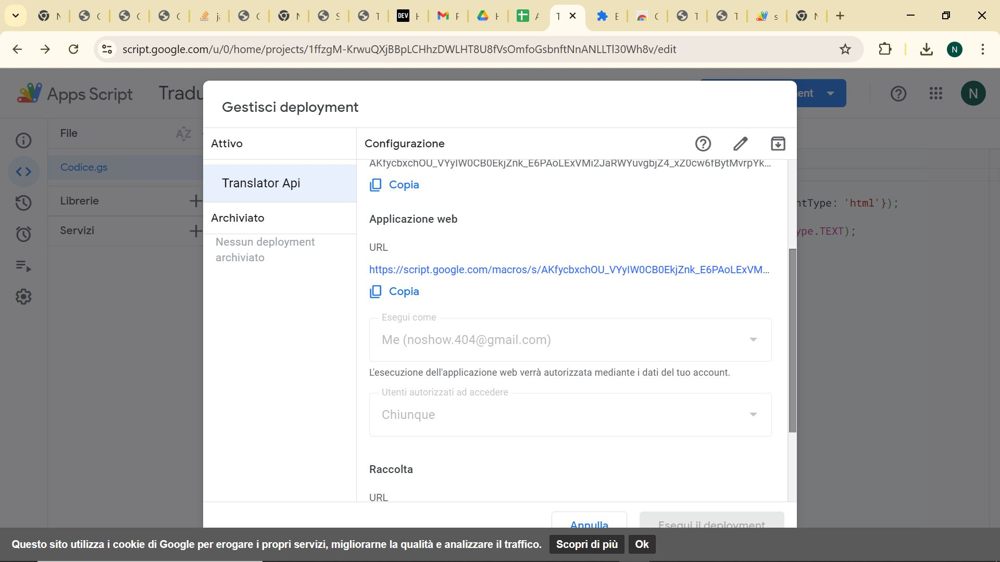

Sometimes only a text snippet translator is available i.e. you can only paste some text in an half window and have the translation in another half window. In this case this software turns out to be quite handy.
As an alternative you can follow the
recommendations here (archived here) and obtain an hook to the Google
translation API for free. This deploy will translate text and leave HTML
tags unchanged. The hook for it to en of a simple text is here. The system
works if your app from the Google Drive is set to serve everyone
with no auth at all. This must be turned on carefully so I suggest to
turn it on from here. Below a
screenshot Deployment>Handle>Edit where you can enable serving for
all.

If you want to translate it by yourself you have to open your SomeName-FL-XY.html file and File>Export it to SomeFolder. This will create in SomeFolder a SomeName-FL-XY.txt file and a SomeName-FL-XY.vexp file. Simply open the .txt file copy the content of it and paste it to some text snippet translator. Revise the proposed translation and save the text translation into a new SomeName-FL-XY_ZY.txt file. Then go to File>Import and in the mask point the new .txt file SomeName-FL-XY_ZY.txt and the .vexp file SomeName-FL-XY.vexp. Put the result in a new SomeName-FL-XY_ZY.html file. This will build the translation needed by GGB to add ZY language to the multi-language version of the SomeName GGB activity.